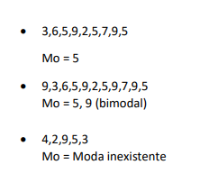

Ana Laura Martarelo Pinto, janeiro 2022
Média Aritimética Simples (Ms)
Um portfólio é de extrema importância, tanto para o aluno quanto para o educador, pois, além de demonstrar o que a pessoa que o realiza sabe sobre determinados conteúdos, também indica as dificuldades da mesma para que assim o educador possa ajudá-la e orientá-la! Este é o último portfólio de matemática do meu primeiro ano do ensino médio e me sinto muito feliz em ter conseguido realizar a maioria dos conteúdos e todos os portfólios até agora. Espero que goste!🤩
Para Calcularmos a Média Aritimética Simples ou (Ms), primeiro precisamos somar todos os valores que possuimos e somar pela quantidade de números que há no conjunto. Por Exemplo, se um conjunto tem os números: 5, 10, 8, 9, 7, 8 e 6 Então, somamos todos os valores em uma adição que resultará no múmero 53. Depois disso contamos quantos números há nesse conjunto, são 7 números, então: 53÷7= 7,5.

Escolhi esse tema porquê tive bastante facilidade em realizá-lo nas aulas, só tomei cuidado para não me confundir quando eram muitos números, além de também ter bastante facilidade nos temas relacionados a ele. Os cálculos são simples e com atenção é sempre fácil resolver!
A moda de um conjunto de números é, basicamente o número que aparece mais vezes no conjunto. Por exemplo, no conjunto: 3,6,5,9,2,5,7,9,5. O número que aparece mais vezes é o número 5, portanto a moda desse conjunto é Mo=5. Mas e se, por exemplo a moda for mais de um número? Pois bem, veja este exemplo: 9,3,6,5,9,2,5,9,7,9,5. O número 5 aparece três(3) vezes, assim como o número 9 que também aparece três(3) vezes. Então esse conjunto é chamado de biomodal, já que tem duas modas que são Mo=5,9. Agora, se o conjunto for, por exemplo: 4,2,9,5,3 não há moda, já que nenhum número se repete!
Realizei a escolha desse tema, porquê ele além de simples, precisa de lógica para ser resolvido. É bem fácil de fazer, mesmo com números grandes. Consegui realizar e entender as atividades e conteúdos relacionados a ele. Acredito que eu ainda vá usar bastante, principalmente no dia-a-dia, por isso quis colocar no portfólio.
A mediana de um conjunto de valores é, basicamente, o valor central desses números. Se a média for um único valor em um conjunto de números ímpar, ele permanece no resultado. Contudo, se o conjunto de números for par, o resultado será a média desses dois(2) valores. Por exemplo, se temos o conjunto: 5,3,4,2,6 então, a mediana é o número 4 que fica bem no centro do conjunto. Agora, se o conjunto for por exemplo: 3,5,2,7,5,9 nesse caso a mediana seria 2 e 7 então 2+7=9 9÷2=4,5 M=4,5.

Escolhi Mediana, pois é um que eu já conheço há algum tempo e sempre achei bem fácil, também auxiliei minha prima em um conteúdo relacionado e acabei fixando bem o tema. Também vi que é um conteúdo que costuma cair com frequência em vestibulares, por isso ele consta no meu portfólio!
Para calcularmos os Juros Simples, utilizamos a seguinte fórmula: J = C.i.t. O (c) equivale ao capital emprestado, o (i) equivale a taxa de juros do período e o (t) equivale ao tempo. Também é possível calcular automáticamente no excel, utiliza-se a fórmula: =(valor do empréstimo)*(taxa de juros)*(tempo). Observe o problema abaixo:

Esse tema, foi um que tive um pouqinho de dificuldade e tive que pedir ajuda mais de uma vez, mas depois que consegui aprender e fixar o conteúdo foi bem fácil resolver e entender o que a professora passou durante o trimestre!
Existe mais de uma maneira de calcularmos a porcentagem de uma quantia, mas vou demonstrar o modo como eu aprendi a calcular, que foi por multiplicação cruzada. Observe os cálculos abaixo:

Mais um cálculo, agora com outros números.

Outro, agora com a icógnita em outro lugar!

Fiz a escolha desse tema, pois sempre achei divertido calcular porcentagem. Agora começamos a rever e estou indo muito bem nos cálculos que envolvem esse conteúdo, além de que irei usar muito no meu dia-a-dia!
Gostei muito da proposta desse portfólio, principalmente por ele ser válido para duas matérias ao mesmo tempo, levando em conta que agora, no fim do terceiro trimesstre estamos bem corridos com a quantidade de temas, avaliações e atividades propostas por todos os professores. Além disso, o portfólio amplia nosso conhecimento em duas disciplinas, sendo um só.
Eu acredito que deva tirar uma nota 6/7 nesse portfólio. Não gostei de algumas coisas na minha página e gostaria de ter distribuído em mais páginas, mas preferi deixar em uma só. Levando em conta os conteúdos, fiz 5 temas e gostei muito, acho que estão explicados de forma clara e organizada.Espero que tenha gostado, há braços.